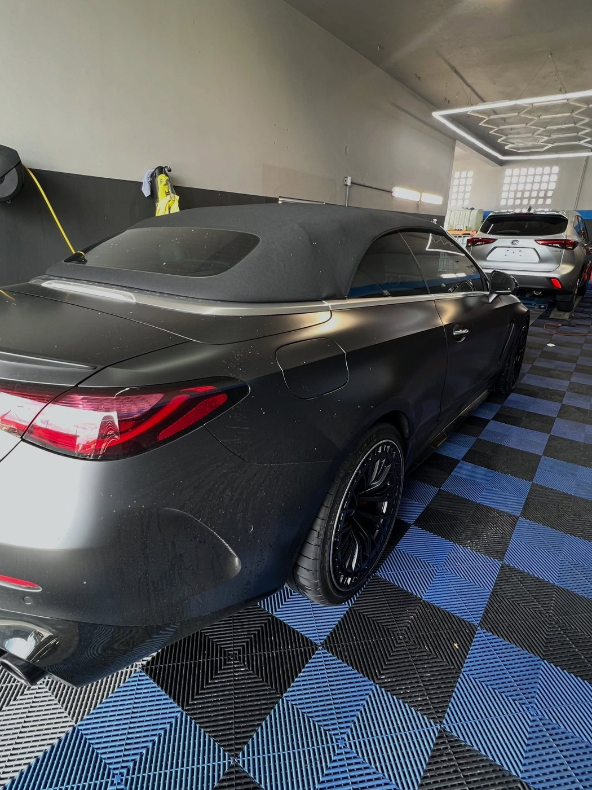
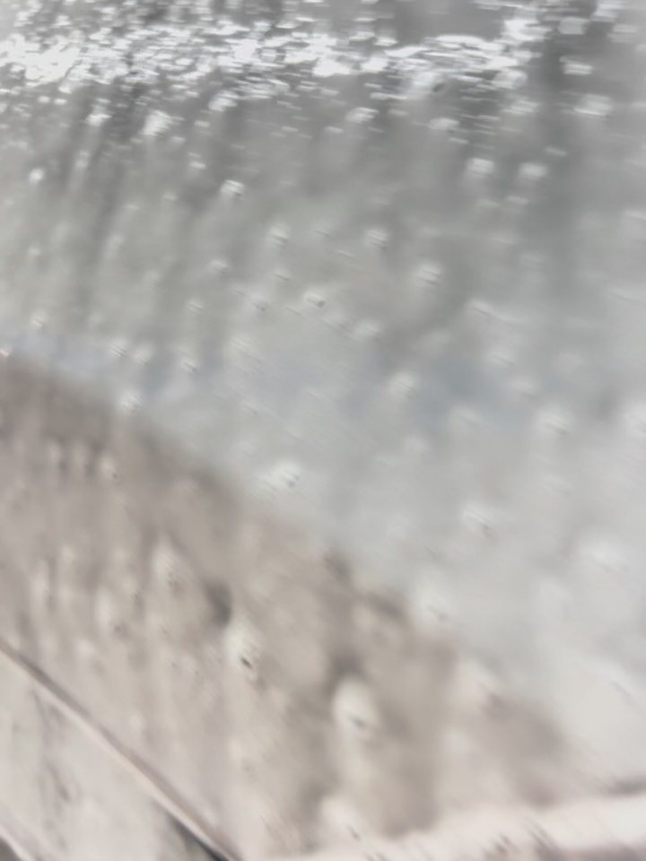
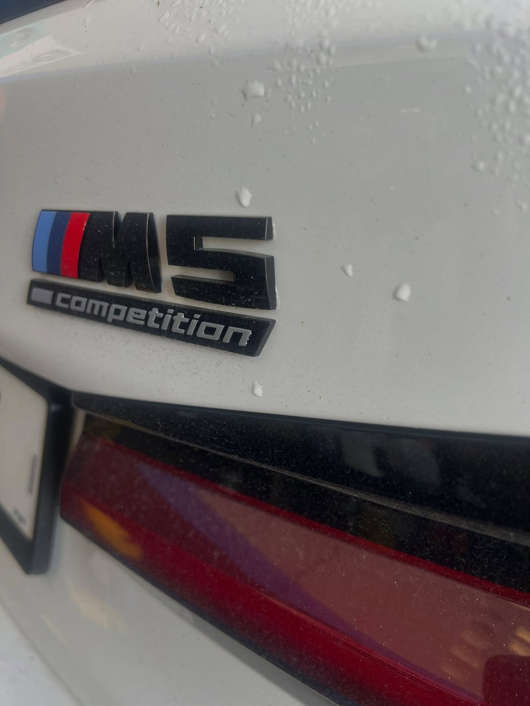
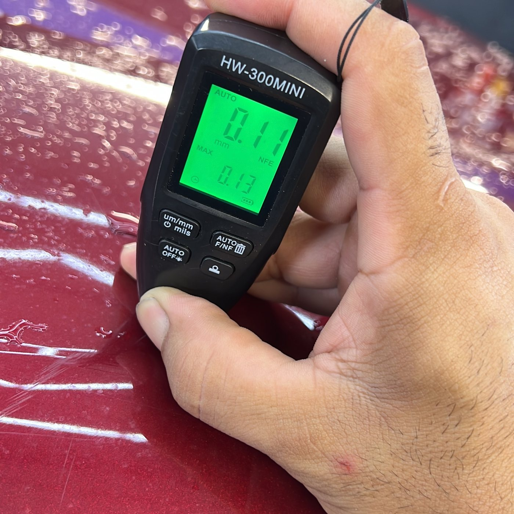
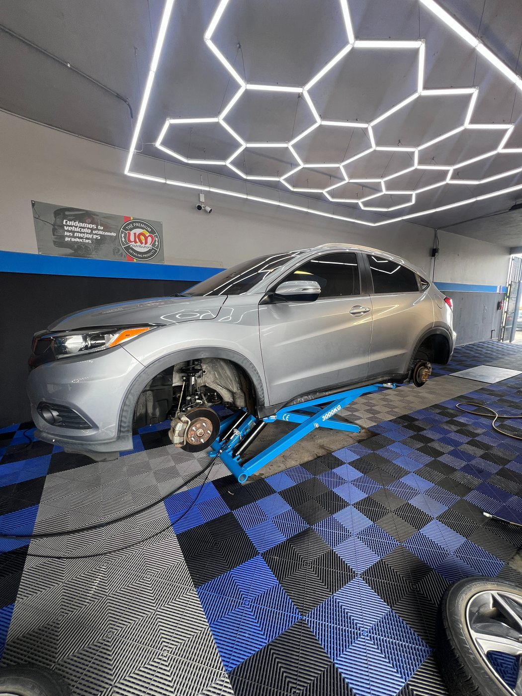
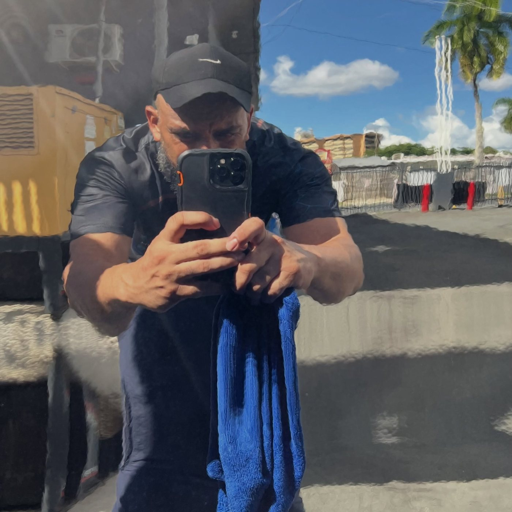
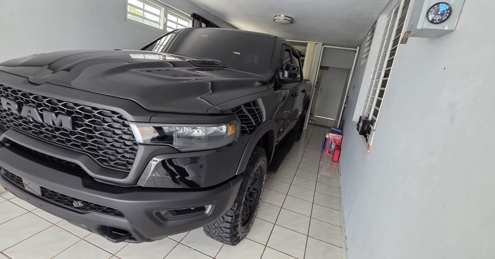
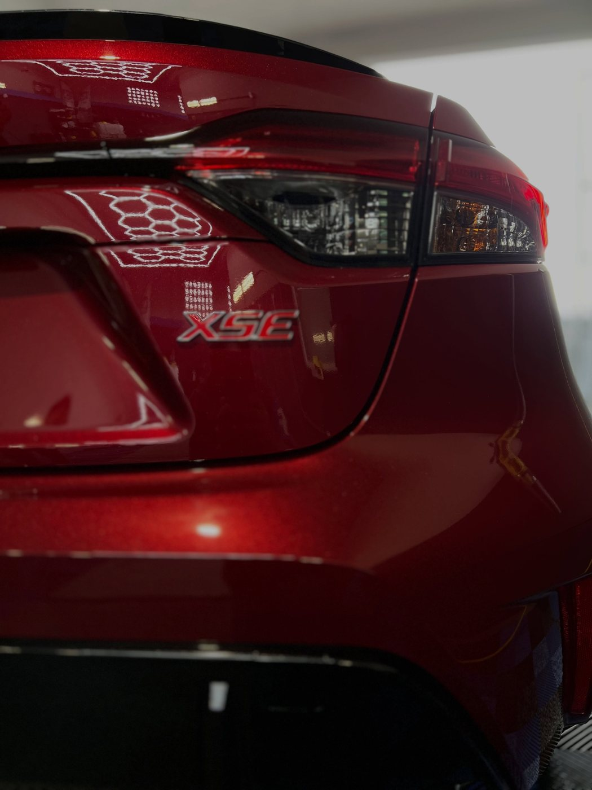
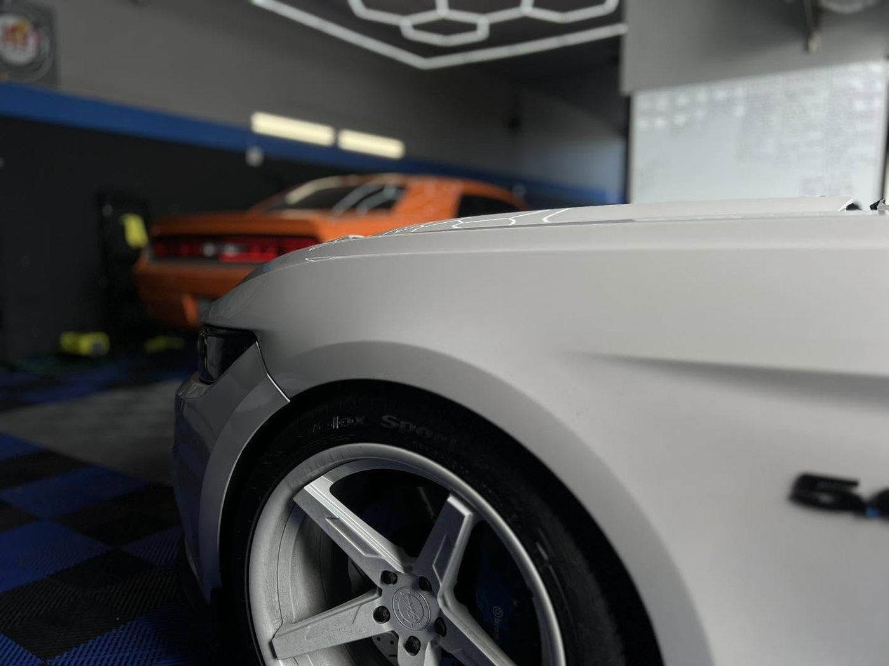

Gnaros Detail & Car Wash · San Juan, PR
Detailing profesional con antes y después: tratamiento de graphene, corrección de pintura y mantenimiento de coating cerámico. 14 años de trayectoria en Las Cumbres, San Juan.
Antes y después · trabajos reales
Cada foto es un trabajo real del taller. Toca una foto para verla en grande.









La cinta se mueve sola · tócala para pausarla y abre la foto que quieras
El taller
Antes y después en cada entrega: lavado, descontaminación y detalle completo.
Recubrimiento de última generación: brillo profundo y protección duradera.
Mantenimiento del coating para que siga rindiendo como el primer día.
Medimos la pintura y eliminamos swirls y rayazos finos. Acabado espejo.
Motor limpio y detallado, componente por componente.
Restauramos y sellamos los plásticos exteriores contra el sol.
Evaluamos tu vehículo y el estado de la pintura antes de tocarla.
Pulido medido para eliminar defectos y sacar el brillo espejo.
Graphene o cerámica según el trabajo, y sellado final.
Quiénes somos
14 años de trayectoria en la Ave. Emiliano Pol, Las Cumbres, San Juan. Vivimos del detalle: cada vehículo que entra al taller sale con acabado espejo, medido y verificado.
Síguenos en @gnaros_detail y mira el antes y después de cada trabajo.
Preguntas frecuentes
Es un recubrimiento de alta tecnología que aplicamos sobre la pintura para darle un brillo profundo y una capa de protección duradera. Escríbenos por WhatsApp y te explicamos cuál le conviene a tu vehículo.
Con el tiempo el coating cerámico necesita mantenimiento para seguir rindiendo: lavado adecuado, descontaminación y refuerzo de la capa. Te lo dejamos de nuevo como espejo.
Medimos el grosor de la pintura antes de pulir y eliminamos swirls, rayazos finos y marcas de lavado, logrando un acabado espejo de forma segura.
Sí. Lavamos y detallamos el motor con los cuidados que necesita, dejando cada componente limpio y presentado.
Restauramos y sellamos los plásticos exteriores del vehículo para devolverles el color y protegerlos del sol.
Estamos en la Ave. Emiliano Pol, Las Cumbres, San Juan, Puerto Rico.
Escríbenos por WhatsApp al 787-595-5009 y coordinamos tu cita.
Agenda tu cita
Teléfono / WhatsApp
+1 787-595-5009Ubicación
Ave. Emiliano Pol, Las Cumbres, San Juan, PR
Llena esto y te abrimos WhatsApp con tu mensaje listo.
Oferta por tiempo limitado
Solo Web
$300
$99
Tranquilidad Total
$1,000
$200
Un año de tranquilidad.
La quiero para mi negocio